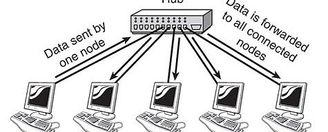
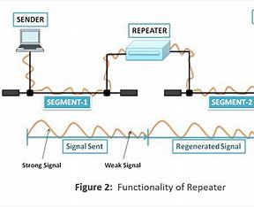
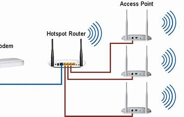

Networking devices are hardware components that connect computers and other devices
in a network, enabling communication, data sharing, internet connectivity, and secure operations.
Main Networking Devices: Switch, Router, Hub, Repeater, Access Point
Switch

A Switch is one of the most important networking devices used in modern LANs.
It connects multiple devices like computers, printers, and servers within the same network.
How it Works:
- Receives data from one device
- Forwards it only to the intended device
- Uses MAC addresses to identify devices
Why it is Important:
- Reduces unnecessary traffic
- Improves speed & performance
- More secure than hubs
Used in: Offices, Companies, Schools, Data Centers
Simple Meaning: Switch = Smart device for internal communication
Router

A Router connects different networks together. Most commonly, it connects a Local
Area Network (LAN) to the Internet.
How it Works:
- Receives data from one network
- Reads destination IP address
- Finds best path and forwards data
Why it is Important:
- Connects LAN to Internet
- Assigns IP addresses
- Supports NAT, Firewall & Security
Used in: Homes, Offices, Enterprises, ISPs
Simple Meaning: Router = Connects different networks & directs data
Hub

A Hub is an older networking device used to connect multiple devices,
but unlike a switch, it is not intelligent.
How it Works:
- Broadcasts data to all connected devices
- Only the intended device uses it
Why it is Weak:
- Creates unnecessary traffic
- Less secure
- Poor performance
Note: Rarely used today. Replaced by Switches.
Simple Meaning: Hub = Old & dumb broadcasting device
Repeater

A Repeater is used to extend the range of a network by strengthening weak signals.
Why Needed:
- Signals weaken over long distances
- Weak signals may cause data loss
How it Works:
- Receives weak signal
- Amplifies it
- Re-transmits as strong signal
Used in: Large Buildings, Long Distance Networks, Wireless Coverage Areas
Simple Meaning: Repeater = Boosts weak network signals
Access Point (AP)

An Access Point provides wireless network connectivity (Wi-Fi). It allows
wireless devices like mobiles, laptops, tablets to connect to a network.
How it Works:
- Connects to router or switch
- Converts wired network to wireless
- Allows multiple users to connect
Why Important:
- Provides Wi-Fi
- Supports many users
- Expands coverage
Used in: Offices, Colleges, Airports, Hotels, Public Wi-Fi
Simple Meaning: Access Point = Device that provides wireless connectivity
✔ Simple Memory Summary
- Switch → Connects devices inside LAN, forwards data smartly
- Router → Connects different networks & internet
- Hub → Old broadcast device (not smart)
- Repeater → Boosts weak signals
- Access Point → Provides Wi-Fi connectivity